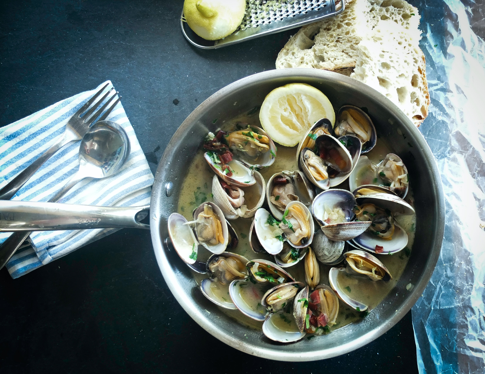
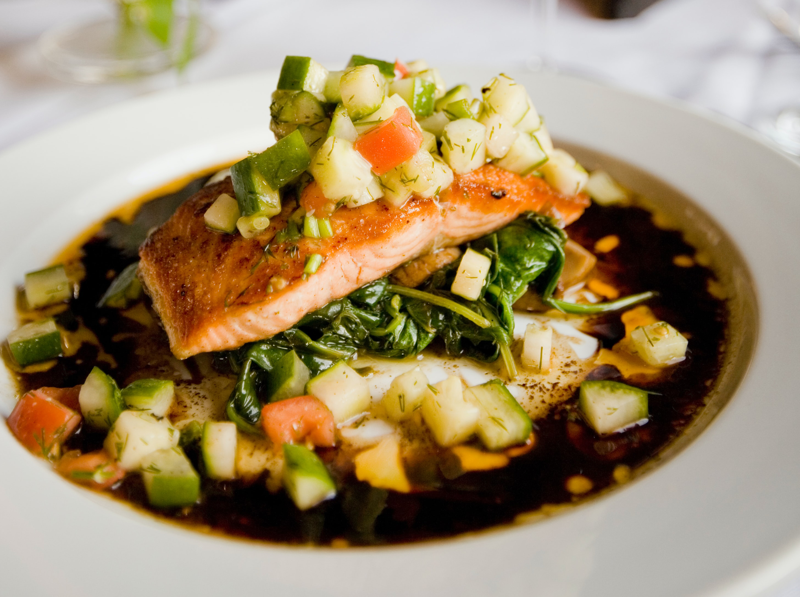
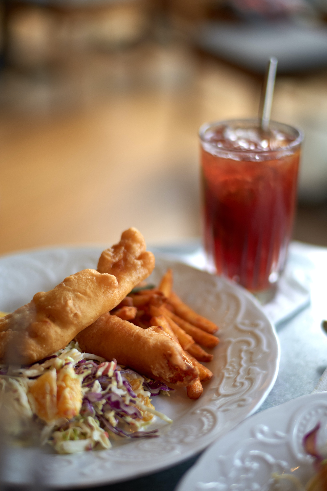

Appetizers Raw Oysters...market price Raw Littleneck Clams...market price Shellfish Sampler 14.95 2 oysters, 2 littlenecks and 2 cocktail shrimp Jumbo Shrimp Cocktail 17.50 Crispy Calamari 15.95 Pines’ Signature Crab Cake 17.95 Jumbo lump crab, mustard sauce, baby lettuce salad with apples, craisins, walnuts and cider dijon vinaigrette Hot Lump Crab Dip 14.50 horseradish, cheddar and cream cheese, seafood chips
Classics Pines’ Signature Crab Cake Combo 31.95 one jumbo lump crab cake, seared shrimp and scallops, mustard sauce, baby lettuce salad with farro, apples, craisins, walnuts and cider dijon vinaigrette Pines’ Signature Crab Cakes 31.95 two jumbo lump crab cakes, mustard sauce, baby lettuce salad with farro, apples, craisins, walnuts and cider dijon vinaigrette Rice Bowl brown rice, kimchi, shiitake, seaweed salad, spinach, gochujang sauce and sesame vinaigrette, choose: Salmon* 17.95, Tuna “Sashimi”* 17.95 or Shrimp 14.95 Seafood Casserole 30.95 scallops, shrimp, lobster, whitefish and cheese baked with sherry garlic butter, roasted sweet potatoes Crispy Fish Tacos 17.50 avocado, pickled cabbage, chipotle mayo, black beans and rice Chipotle Lime Shrimp Tacos 17.95 salsa verde, queso fresco, roasted corn salsa, black beans and rice

Chowders and Salads New England Clam Chowder 9.50 Lite Clam Chowder 9.50 Maryland Cream of Crab Soup 9.50 House Salad 8.95 cherry tomato, shaved carrot, sunflower seeds, creamy romano peppercorn dressing Classic Caesar Salad 8.95 romaine hearts, garlic croutons, shaved romano, creamy dressing Chopped Greek Salad 9.95 diced olives, cucumbers, tomatoes, chickpeas and feta Cobb Salad 8.95 avocado, bacon, tomato, boiled egg, blue cheese Top any of the above salads with • Seared Chicken 7.50 additional • Seared Shrimp 11.00 additional • Seared Salmon* 12.00 additional

Sandwiches each comes with fries and coleslaw Seared Chicken Sandwich 15.95 applewood smoked bacon, monterey jack cheese, lettuce, tomato and mayonnaise Pines’ Signature Crab Cake 19.50 jumbo lump crab on a bun with mustard sauce, lettuce and tomato Lobster Roll...market price warm butter poached or traditional with mayo Turkey Club 13.95 applewood smoked bacon, multigrain toast Tuna Burger 16.95 chili spiced fresh ground tuna, herb crumbs, roasted red pepper sauce Crispy Fish Sandwich 15.95 tartar sauce, lettuce and tomato Oyster Po’ Boy 16.50 crispy fried with shredded lettuce, tomato, cajun remoulade Hamburger 15.50 (can be undercooked upon request) add cheese for 1.00
Seared Salmon 20.95 garlic leek brown rice, charred broccoli Tuna* (cooked medium rare)...market price jasmine rice, seaweed salad Shrimp 19.95 garlic leek brown rice, charred broccoli Smothered BBQ Steak Tips 19.95 mesquite bbq, peppers & onions, coleslaw, onion strings Marinated Chicken 22.95 jasmine rice, spinach North Atlantic Sea Scallops...market price dry-packed, jasmine rice, spinach Snapper 25.95 roasted sweet potatoes, charred broccoli
Crispy comes with fried fries and coleslaw Fish & Chips 18.95 regular or spicy Oysters 23.95 New England Clams...market price whole-bellied, sweet & petite Shrimp 19.95

Desserts Boston Cream Pie 9.50 chocolate sauce, rum caramel sauce, toffee almond crunch Key Lime Pie 9.50 lime cream, raspberry sauce Vanilla Ice Cream 6.95 Chocolate Chip Cookies 5.95